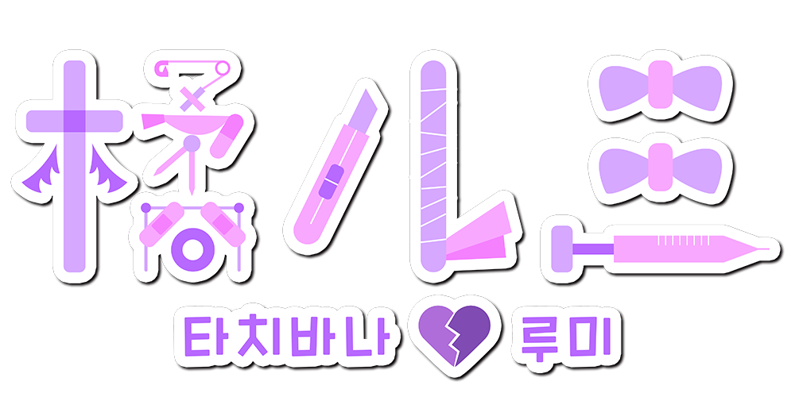

한국어/일본어 연속음 UTAU 음원

이름 : 타치바나 루미(橘ルミ)
나이 : 굉장히 어려보임(스물...살이예요...아우우...><)
신장 : 150cm
성격 : 살짝 멘헤라일지도?
좋아하는 것 : 에너지 드링크, 커피, 달콤한 디저트
싫어하는 것 : 외로움, 마음의 병, 다른 사람이 왼쪽 손목을 보는 것(절대로 안돼!!)
마음이 많이 여리고 연약한 소녀.
사랑 때문에 많이 상처받고 늘 의기소침하다.

litmus* - 캐릭터 원안/발음 녹음/관리자
Twitter
Youtube
묘야 - 음성 제공(RVC 모델 제작용 데이터셋 제공)
Twitter
Youtube
みたう - 일러스트
Twitter
※본 음원은 RVC(AI커버)를 이용하여 제작하였으며, 사전에 음성을 제공해주신 묘야님과 협의를 거친 후 제작하였음을 밝힙니다.
본 음원은 OpenUtau에서 사용하는 것을 권장합니다.
일반 UTAU와의 호환성은 확인되지 않았습니다.
권장 렌더러 : moresampler
다운로드 시, 음원 이용 규약에 동의하는 것으로 간주합니다.